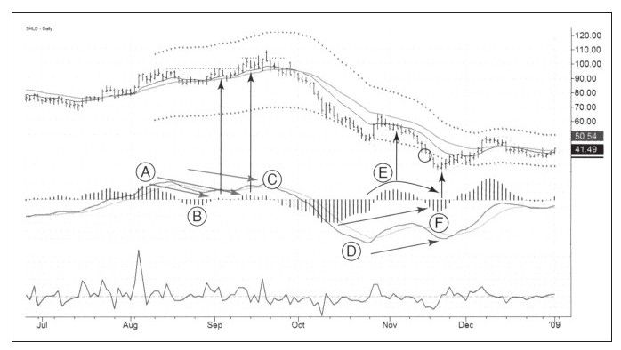

树不会长到天上去，熊市也不会跌到零。当多数投资者和交易者变得苦闷、对市场厌烦和绝望时，他们就开始不断卖出。实力更强的、有远见的投资者买下他们的股票，这导致股票供应慢慢减少，股价下行压力减轻，股价逐步止跌。同时，明智的廉价猎手也开始蠢蠢欲动。当多数人感到前途黑暗、绝望情绪在市场间弥漫的时候，这群人做出最后一次集体抛售行动，这为下次牛市打下了基础。
从SHLD的日线图走势中我们可以看到2008年9月的时候熊市是如何在顶背离的情况下展开的（见图9-11中A-B-C）。当时MACD柱出现了峰值A，随后跌穿零轴到达低点B，之后上涨乏力升到C，而此时股价创出新高。请注意就复杂的顶C来说，顶背离来得相当慢。

在这个顶部有两个卖出信号，都是从MACD柱下跌中来的。第一个要放弃，第二个也走的不平坦，价格在创出新低前快速反弹，这次反弹把那些止损设得太近的人横扫出局。新手和专家的关键区别之一是，新手会在被打止损后不再入场交易，职业交易者期待遭遇一些市场骤变的情形，他们可能会在入场时遭受多次小额亏损但又重新入场，并最终在心理上获得慰藉，这样他们会感到很舒服。
熊市在11月份得到缓解，市场出现与做空相反的MACD信号，但此时有更多重要的模式开始出现。看看10月出现的MACD柱的底点D，它表明熊市非常强烈，之后产生了一波反弹，不过在这样强烈的熊市情况下，这种反弹如昙花一现，但反弹还是让MACD柱在11月份运行到零轴之上。这意味着熊背已经被打破。
只要指数或个股出现创纪录的MACD柱低点之后又上涨到零轴之上，我就把这只股票列入观测列表中，我在等待第二个底的出现，如果届时指标下跌不多，我就很可能会买入。这就是底背离，技术分析最强烈的信号之一。
11月份时股价创出新低，但是MACD柱只跌到F水平。上涨的K线确认了MACD柱的背离正式形成，做空的迟到者将被困于此。注意这个背离是多么明显：MACD柱和MACD线以一种完全有序的背离模式出现，不含任何噪音。日线图MACD背离提示我暂时忽视周线图状态，即便周线组合指标仍然是红的，但是日线图出现底背离，我也会做多。当然，我会在近期低点附近设置保护性止损。